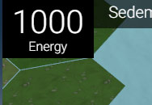
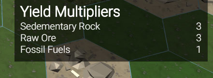
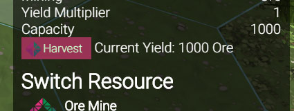
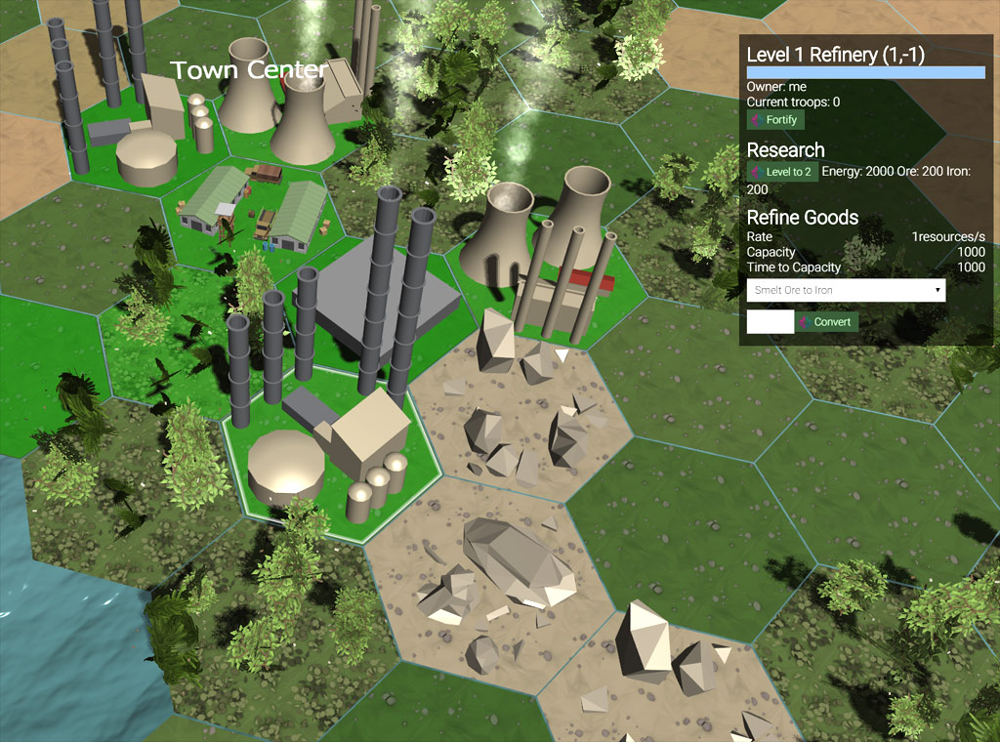
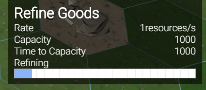
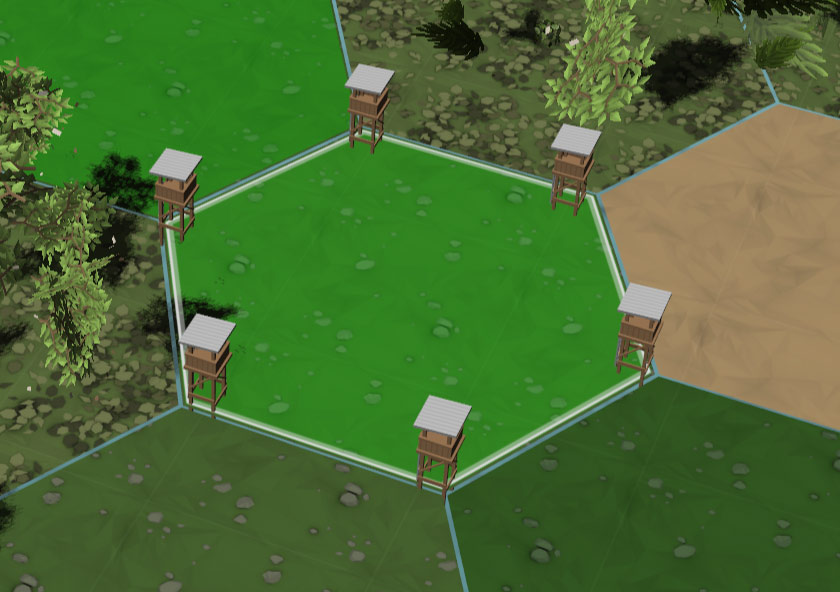
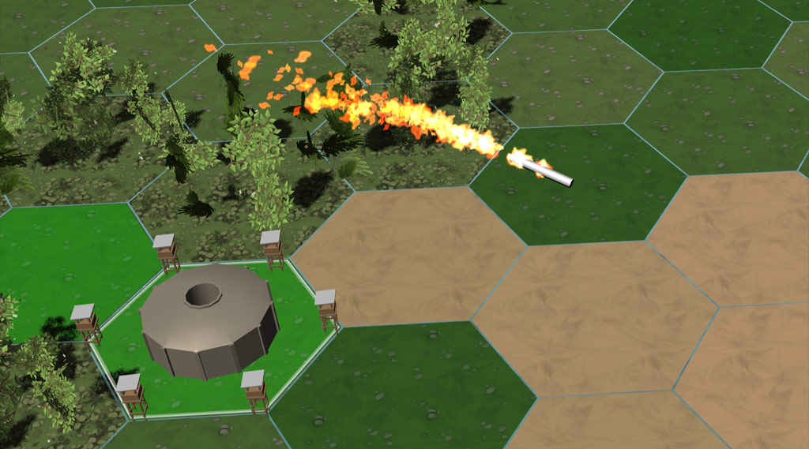

LamdenWorld
Blockchain RTS game
LamdenWorld is a browser-based full 3D RTS strategy game running on Lamden Blockchain where you can earn a pot of TAU which all players contribute to by winning a game session.
Begin
You start with a town center on a tile. You need resources to do things in the game, the main one being Energy.
Energy
Energy is mainly produced in your capital. It has be be harvested from time to time to avail it. To increase your rate of energy generation, you can either level up your capital, or create power plants, however the latter produce energy at a much slower speed than your capital.
Collecting Resources
There are two types of resources: raw and processed resources. There are three raw resources: rock, ore and crude. They can be mined with mines and then refined into processed resources.
To collect raw resources (rock, ore and crude) you'll have to colonize a few tiles. This can be done by selecting a tile adjacent to a tile you already own, and clicking Colonize. Colozing costs Energy. To replenish Energy, you can select your town center and click harvest. Later in the game you can also build power plants to generate more energy, although they generate much less power than your town center.
You can build a building on empty tiles you own. The Ore Mine, Oil Well and Rock Mine are resource mines and produce sedementary rock, ore and crude oil respectively. After building you can switch between them to change the resource produced. A mine will only produce one resource at the same time. To make a mine, click an empty tile you own, then click the type of mine you want to build. It takes some time for construction to be complete for you to use any building.
 After building the mine, the speed of gathering depends on a number of multipliers:
- The kind of tile, different kinds of tiles produce different amounts of different resources.
- The level of the mine. Mines start at level 1 and can be upgraded for a cost. While leveling up is infinite, it costs increasingly more per level and has diminishing returns for every level.
- Some technologies will increase mining speed when researched.
 Mines have to be harvested to add the resources to your resource pool. If you don't harvest them they will reach their capacity after a while and won't produce more until harvested. To harvest a mine, select it and click the Harvest button. After harvesting, mines automatically start mining again, even when stalled because of capacity.
Refining
 To be able to use the raw resources, you'll have to refine them to processed resources. This can be done in a refinery. To build a refinery, select an empty tile you own, then click Refinery from the available building list. After construction is finished you can start refining.
Refining is limited by speed and refiner capacity, both of which can be upgraded by building level and technologies. To refine a raw resource, click an idle refinery you own and select your desired production from the drop down list, then clicking Refine. When refining is completed, you can collect the processed resource by clicking Collect.
Building
When you have enough processed resources you can start constructing other buildings. You can only build buildings on empty tiles you colonized.
- Barracks: you can produce troops here. Production speed varies on building level and researched techs.
- Tank Factory: you can produce a lot more units here faster than Barracks at a premium cost.
- Harbor: you can produce naval units here, which can move on water but not on land.
- Power plant: power plants generate additional energy.
- Missile Silo: This building fires a powerful missile at a target tile dealing quite a bit of damage.
Leveling up Buildings
All buildings when constructed start at level 1. Various buildings like mines, refineries, barracks can be leveled up. Leveling up a building costs resources. Every level costs more than the previous one. leveling up buildings makes their function more efficient. For mines this means faster mining, for refineries faster refining, for barracks faster and cheaper production.
Fortifications
Any tile you own can be fortified with a fortification regardless of whether you have built anything there. To fortify a tile, select it then click Fortify. Fortifications cost resources and increase HP of the tile. This additional HP is shown in the thin health bar below the main health bar of the tile when selected.
Unit Training
To create your army, you can create troops at Barracks and Tank Factory in batches. Training speed and batch capacity depends on building level and technologies researched. Higher building level also decreases the cost per unit trained.
Units are uniform. Tiles have a capacity of maximum units they can hold simultaneously. This capacity can be increased with technologies or by constructing a Bunker on a tile, the latter of which increases the capacity by a fairly big margin. Stacking lots of units in a single bunker makes them a powerful concentration of your forces, able to withstand a large opposing force, however makes them vulnerable to missile attacks, which may wipe out a large portion of units on the tile.
To train units, select any barracks or tank factory you own and click Train to train as many units as the training building can produce in one batch.
Moving troops
You can move units to other tiles. Doing any action with a group of units, including moving, triggers a cooldown which must be finished before you can do anything else with the units again.
To move units, select them, then right-click any tile within moving distance (3 or more depending on technologies researched). You can move units to a tile which already contains some of your units. This will merge the units together, making one larger army on the tile. You cannot move your units on tiles which are occupied by enemy units or enemy territory. Trying to move units to a tile occupied by the enemy is considered attacking those units/territory.
Units v units Battle
You can use your troops to attack
Firing Missiles
Another way to defend your territory or attack enemy territory is with long-range missiles. These can be fired from a Missile Silo. It costs Energy and Uranium to fire a missile. The more uranium you invest when firing a missile, the more powerful it will be.
To fire a missile, select a missile silo, enter yor desired power value (more powerful will be more expensive), click Launch Missile, then right-click any neighboring tile within a 5 tile radius to target it.